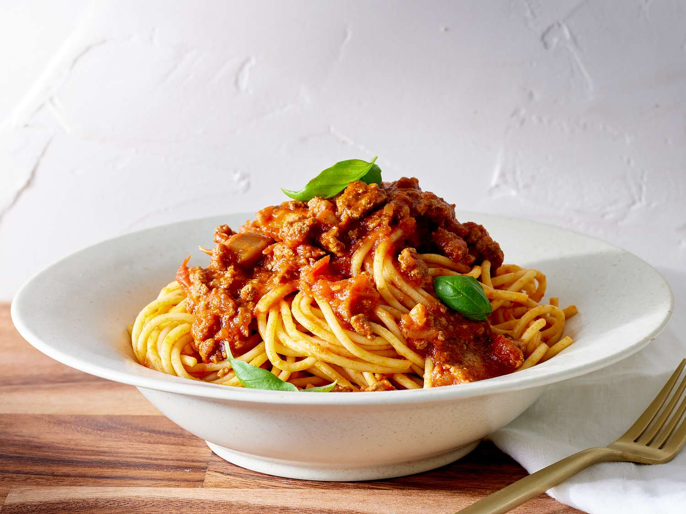

Home
Jollof Rice Recipes

Description
Spaghetti is a popular pasta dish made from long, thin noodles cooked in boiling water and served with a flavorful sauce. It is commonly paired with tomato-based sauces, vegetables, and sometimes meat to create a rich and satisfying meal.
This dish is enjoyed all over the world because it is simple to prepare and very versatile. Spaghetti can be served with different ingredients and seasonings, making it a delicious option for lunch or dinner.
Ingredients
- 200g spaghetti
- 2 cups tomato sauce
- 1 onion
- 2 cloves garlic
- 2 tablespoons vegetable oil
- 1 teaspoon seasoning powder
- Salt to taste
- Cooked minced meat (optional)
Steps
- Boil water in a pot and add a pinch of salt.
- Add the spaghetti and cook until it becomes soft.
- Drain the spaghetti and set it aside.
- Heat vegetable oil in a pan and sauté chopped onions and garlic.
- Add the tomato sauce and seasoning, then cook for a few minutes.
- Add the cooked spaghetti to the sauce and mix well.
- Cook for another 2–3 minutes while stirring.
- Serve hot with meat or vegetables if desired.